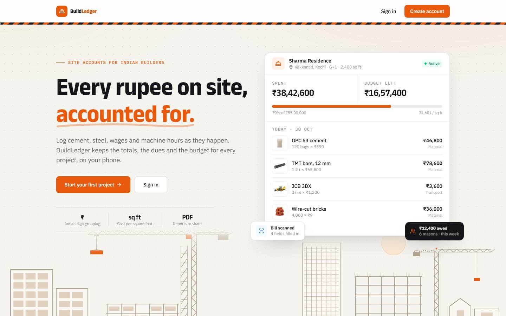
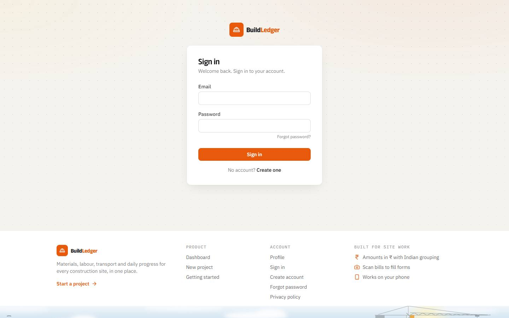
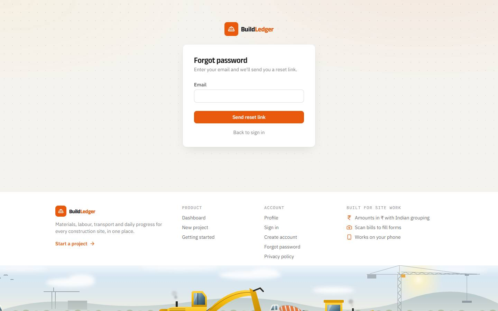
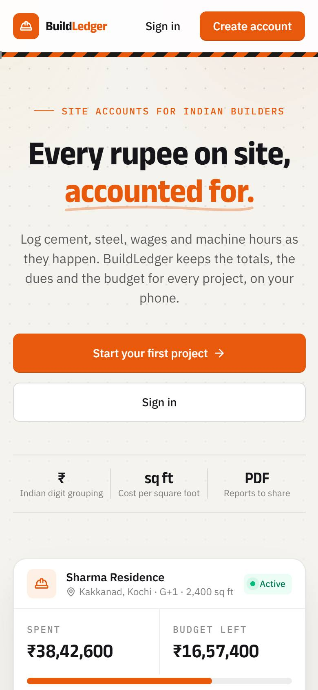
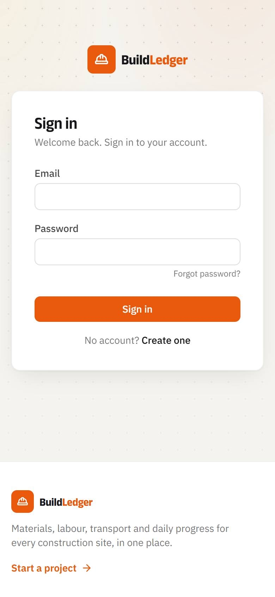

Colour
21 roles and 40 palette colours, each with how much the site uses it.
Sample page
NewBuilt from your tokens
Every colour, size, space, radius and shadow on this page comes from the tokens measured on buildledger-sable.vercel.app. If something looks off, fix the token, not the page.
21 roles and 40 palette colours, each with how much the site uses it.
11 text styles on 3 font families, with their phone sizes.
A 4px grid, 6 radii and 4 shadows.
Background, text and spacing from the inverse roles.
Colour roles
#f4f4f21:1 on background#1b1f1ca65.03:1 on background#1b1f1c15.14:1 on background#1b1f1c994.28:1 on background#1b1f1c732.78:1 on background#1b1f1c141.17:1 on background#ffffff1.1:1 on background#163d2711.02:1 on background#ffffffb31.07:1 on background#1f51358.34:1 on background#ffffff1.1:1 on background#163d2711.02:1 on background#1f51358.34:1 on background#e8f0ea1.05:1 on background#1a242014.48:1 on background#8a64104.88:1 on background#f6eedb1.05:1 on background#1e7a464.86:1 on background#c08a122.77:1 on background#b423185.97:1 on background#b8860b2.96:1 on backgroundChart series, in order
#2f6b4a#b8860b#5f655fPalette · every colour measured, most used first
#ffffff29.9% · bg#16161aa69.8% · text#ffffffb28.1% · bg#16161a7.1% · text#15151ab36% · text#1a1a1a147.6% · border#16161b994% · text#161619663.2% · icon#16161a8c2.8% · text#ffffffd92.5% · text#3c2d1e212.5% · gradient#e8590c2% · text#16161b731.8% · text#e8590c121.2% · gradient#fab2190f1.2% · gradient#14141d1a1.2% · border#14141b261% · border#0069a80.9% · icon#0000000f1% · shadow#ffffffa60.8% · text#151519bf0.8% · text#ffffffe60.7% · bg#1111220f0.6% · border#c44a080.4% · text#e8590c590.4% · border#16161acc0.3% · text#16161a0a0.7% · shadow#16161a800.3% · text#f5f3ee0.3% · text#ffffff0d0.2% · gradient#fff0e50.1% · bg#000000260.2% · shadow#ffb86a0.1% · text#17171a590.1% · text#16161a2e0.1% · shadow#ffffff330.1% · border#00bb7c800.1% · shadow#e6570c290% · gradient#1d1b180% · gradient#00bc7d0% · gradientType
Space · 4px grid
Radius and shadow
Buttons, rebuilt from their recipes (second row: :hover)
Icons · line, 1.75px lines at 24px, round caps, round joins
The real site, for comparison






